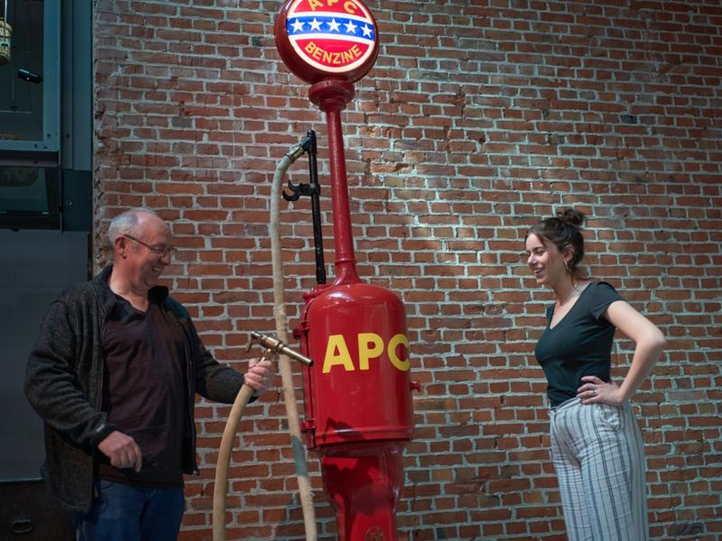
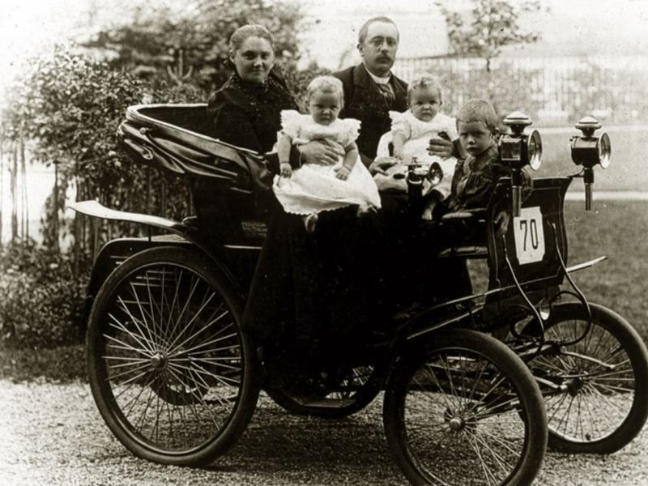
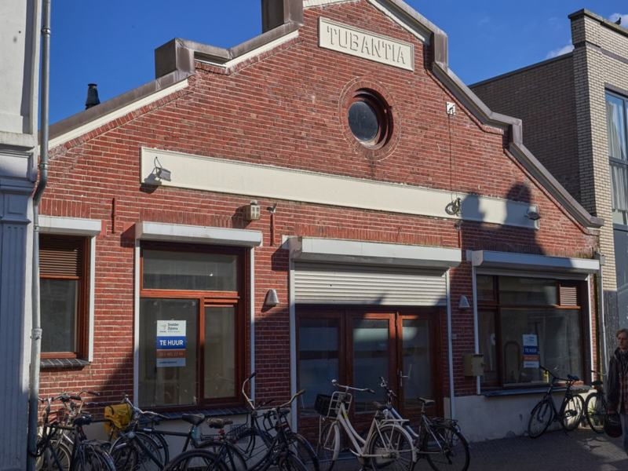

Benzinepomp



Object: 19
Filemeldingen zijn dagelijkse realiteit geworden. Ondanks het fijnmazige wegennet dat als een spaghettideken over ons platte land is gelegd. Toch is automobiliteit een betrekkelijk nieuw fenomeen. Honderd jaar geleden was het een enkeling die zich verplaatste in een benzinegestookt voertuig. Enschede - een puissant rijke stad in die tijd - was er aardig vroeg bij. Het was Willem Helmig van Heek, de derde zoon van Gerrit Jan, die in 1899 het automobiel introduceerde in Enschede. Drie jaar na de eerste in Nederland en veertien jaar nadat Carl Benz de eerste benzine-aangedreven ‘motorwagen’ bouwde. Het zou nog 23 jaar duren voordat de eerste benzinepomp in het straatbeeld verscheen.
‘Gekkengetal’ 11 werd geen kenteken Statistiekjes zijn toch grappig, als het om dit soort onderwerpen gaat. Die eerste Enschedese auto - een Benz Comfortable - was de 69ste in Nederland. Kentekens werden op volgorde uitgegeven. De Benz van Helmig had nummer 70, maar het ministerie had in haar wijsheid besloten om ‘gekkengetal’ 11 in de uitgifte over te slaan. Nederland telde in totaal nog geen tweehonderd auto’s.
Kinderschoenen: benzine in blik Automobiliteit stond in de kinderschoenen, in alle opzichten. Die ‘motorwagen’ van Benz, van veertien jaar eerder, was weinig meer dan een overmaatse driewieler met spaakwielen. De Benz van Helmig leek op een koets waarbij het paard was weggelaten. De tank werd gevuld met flessen benzine, gekocht bij een apotheker of een eerste rijwielhandelaar die wel brood zag in nieuwerwetsigheden.
Rond 1900 kon je in grotere steden mandflessen krijgen met een paar liter benzine. In 1905 richtte smid/rijwielhandelaar Wilhelm Gassner als eerste een benzinedepot in, op de hoek van de Beltstraat en het G.J. van Heekplein. Daar werden tienliterblikken benzine opgeslagen en verkocht (16 cent per liter). Petroleumventers duwden karren door de straten waarop langzaamaan steeds minder petroleum- en meer benzineblikken stonden.
Benzineopslag bracht alleen de nodige risico’s met zich mee. Het spul is op zichzelf niet brandgevaarlijk, maar dat geldt niet voor de damp die er afkomt. Verlichting in die dagen kwam veelal van petroleumlampen en met wat zuurstof erbij, stond zo’n opslag zo in de hens. Enschede had ervaring met branden in het stadshart, maar ja: de vooruitgang…
De eerste benzinepomp Amerika liep op de automobieltroepen vooruit en na een aantal ongelukken ontwikkelde Gilbert & Barker daar in 1911 de eerste ondergrondse opslag in een tank, met een ‘aftapinrichting’ bovengronds. Het Amerikaans-Belgische-Nederlandse American Petroleum Company (later Esso) haalde de vondst naar Nederland. Een stuk veiliger en reuze handig: een handbediende zuigerpomp, een klok die het aantal liters aangeeft, een slang om de tank te vullen.
In mei 1922 is het dezelfde krijgt Wilhelm Gassner die als eerste een vergunning krijgt voor de ondergrondse opslag van een bezinetank, met een ‘aftapinrichting’. Dat is wat wij tegenwoordig een benzinepomp zouden noemen. Hij is dan inmiddels wel verhuisd: de eerste Enschedese benzinepomp staat voor ‘garage Tubantia’ aan de Noorderhagen 2.
Daarna gaat het snel. Iets meer dan drie maanden later volgt Van de Linde met een pomp aan de Haaksbergerstraat 314, een maand erop nog een aan de Boddekampsingel 2. Een singel die nog maar drie jaar bestaat. Vijftien jaar later installeert Shell daar de eerste elektrisch bediende pomp. Pomp- en garagehouder Herman Josef Roelofzzen laat die, als eerste in de stad, overkappen. De pomp aan de Boddekampsingel bestaat nog steeds.
Een voorzichtige start Tussen 1920 en 1940 geeft Enschede zo’n tachtig Hinderwetvergunningen af voor de inrichting van een benzinepompstation. In totaal rijden er vlak voor het uitbreken van de Tweede Wereldoorlog een kleine honderdduizend auto’s over ’s Neerlands weegen. Al met al een voorzichtige start. Automobielen kostten een paar duizend gulden en waren, zeker in het begin, vooral het speeltje voor een heel kleine bovenlaag.
Maar een handjevol visionairs had al vroeg in de gaten welke enorme veranderingen dat rare ding zou gaan brengen. Onder hen Cornelis Lely (van de Zuiderzeewerken) en een Enschedese burgemeester. Daarover meer in de volgende aflevering.